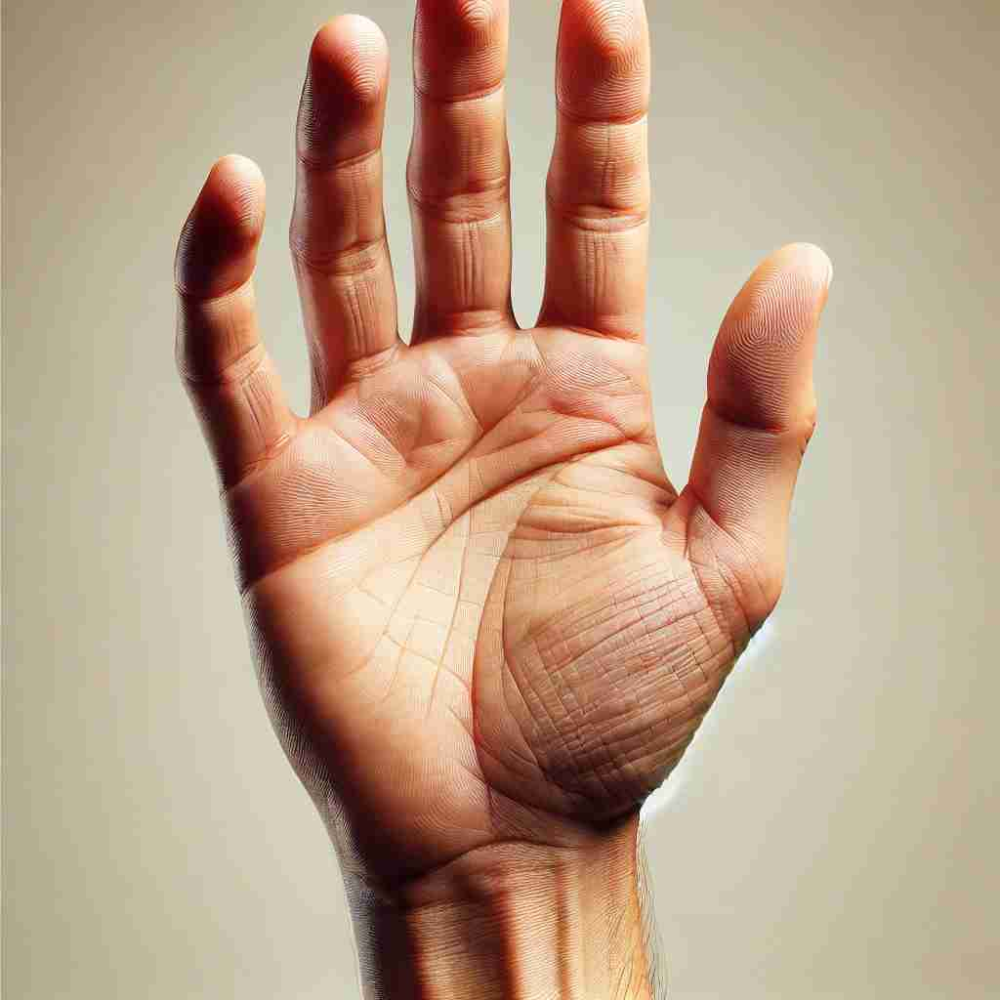

💬 It's important to wash your hands before eating. 在吃饭前洗手是很重要的。

💬 The child has an open hand for the dog to sniff. 孩子伸出一只开放的手让狗嗅。
💬 She is about to give a hand with the coin. 她正要帮忙处理硬币。

💬 You can hold something in your hand easily. 你可以轻松地用手握住某物。
💬 It's important to wash your hands before eating. 在吃饭前洗手是很重要的。
💬 The child has an open hand for the dog to sniff. 孩子伸出一只开放的手让狗嗅。
💬 She is about to give a hand with the coin. 她正要帮忙处理硬币。
💬 You can hold something in your hand easily. 你可以轻松地用手握住某物。
🧠 想象你的'手'（hand）作为身体的一部分，它可以拿取、给予、工作、帮助。这个核心概念延伸到了工人、帮助、控制权，甚至扑克牌和时钟指针。通过联想手的各种功能和形态，你可以更容易理解和记住'hand'的多重含义。
🔈 [hænd]
🗝️ n. the part of the body at the end of the arm, used for holding, touching, and feeling things 手的部分，用于抓握、触摸和感知物体。
🎭 在一个阳光明媚的海滩上，小女孩用她的手挖沙子，感受沙子的柔软和温暖。她抬起手，把一把沙子轻轻洒回海滩上，展示了'hand'作为身体部位用于抓握、触摸和感受的功能。
💬 She held the pen in her right hand. 她用右手握着笔。
🌳 这个单词由词根 'hand' 组成，表示 '手'。没有明显的前缀或后缀，与身体部位相关。
💡 记忆 'hand' 时，可以联想到实际的 '手'，这不仅是身体的重要部位，也是日常生活中操作、触摸和感知的工具，帮助我们更好地理解与 '手' 相关的词汇。
🗝️ v. to give or pass something to someone 给予或传递某物给某人
🎭 在一个热闹的办公会议室里，经理正在结束会议。他微笑着将一份重要的合同交给他的助手，说道：'请把这个传真给客户。'助手接过合同，展示了'hand'作为给予或传递动作的含义。
💬 Can you hand me that book, please? 请把那本书递给我好吗？
🤔 用手传递物品
🗝️ n. a person who does physical work or has a particular skill 从事体力劳动或具有某项特定技能的人
🎭 在一个繁忙的农场，一位经验丰富的农场工人正在修理拖拉机。他娴熟地使用工具，展示了过人的技巧。这位工人就是农场的顶尖'hand'，掌握着熟练的技艺。
💬 We need more hands to help with the harvest. 我们需要更多的人手来帮助收割。
🤔 手代表劳动力或技能
🗝️ n. help or assistance 帮助或协助
🎭 在一个下雨的城市街道上，一位女士不小心落了伞。一位年轻人跑过来，帮她捡起伞，并撑到她头上，微笑着说：'让我给您一个帮助的'hand'。'这个场景展示了'hand'作为帮助或援助的含义。
💬 He offered a hand with the heavy lifting. 他在重物搬运上提供了帮助。
🤔 伸出援手的概念
🗝️ n. the cards held by a player in a card game 玩家在纸牌游戏中持有的牌
🎭 在一个舒适的客厅里，朋友们围坐在桌子旁打牌。其中一位玩家看了看自己的手牌，心里盘算着下一步。不知道他这手牌够不够好来赢得这一局。这个场景中，'hand'指的是玩家手中持有的纸牌。
💬 He was dealt a good hand in poker. 他在扑克中抓到了一手好牌。
🤔 手中握着的牌
🗝️ n. control or responsibility 控制或责任
🎭 在一个高级管理会议上，CEO宣布了新的项目负责人：'从今天起，这个项目就在您的'hand'里。'负责人认真点头，意识到自己肩负着重要的责任。'hand'在这里表示控制或责任。
💬 The project is in good hands now. 这个项目现在管理得很好。
🤔 掌控在手中的概念
🗝️ n. a pointer on a clock or watch 钟表上的指针
🎭 在一个古老钟表店，学徒正在研究老座钟表的内部运作。他注意到秒针缓缓地移动，紧接着是分针的微调。这个场景中，'hand'指代的是钟表上的指针。
💬 The minute hand is pointing to 12. 时针指向12。
🤔 类似手指指向的时钟指针